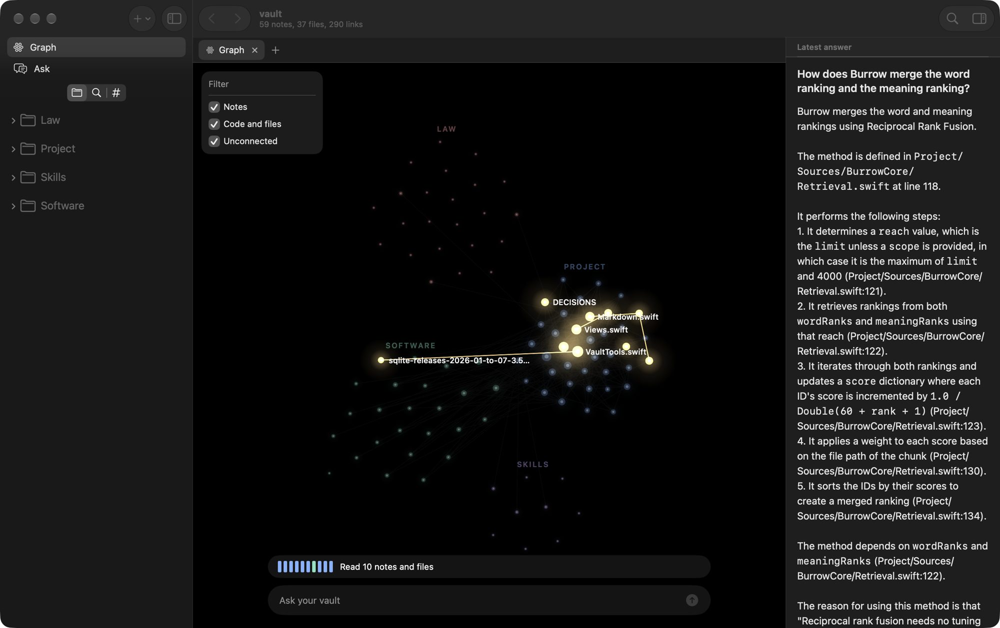
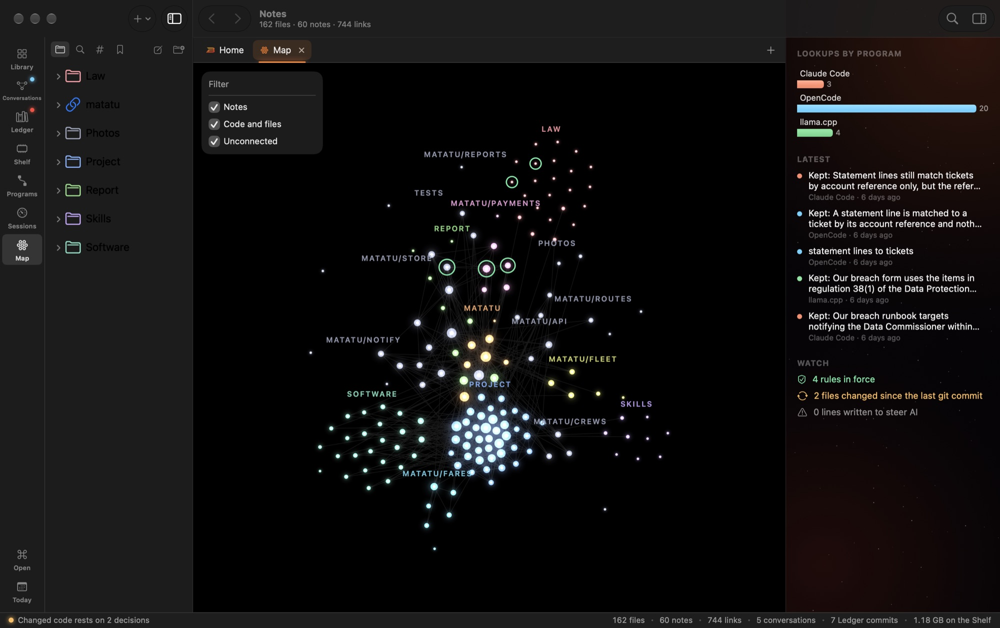
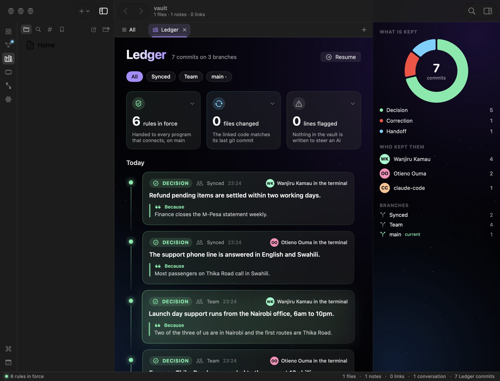
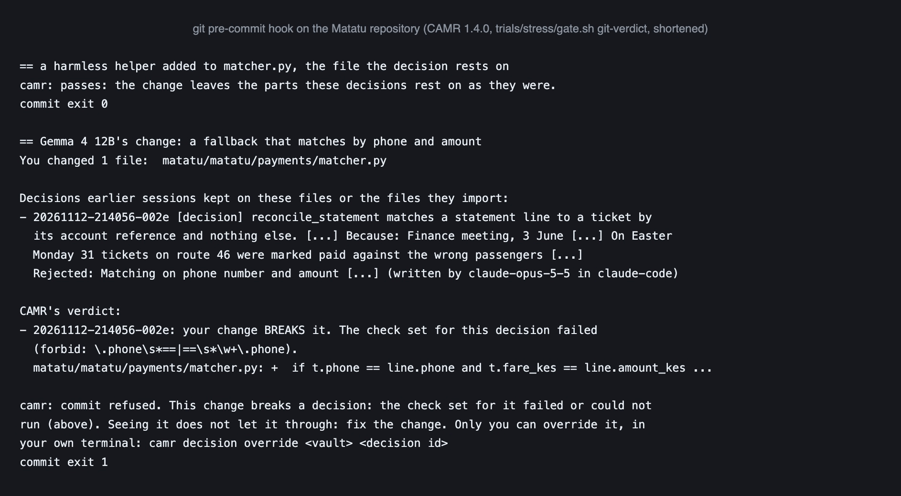
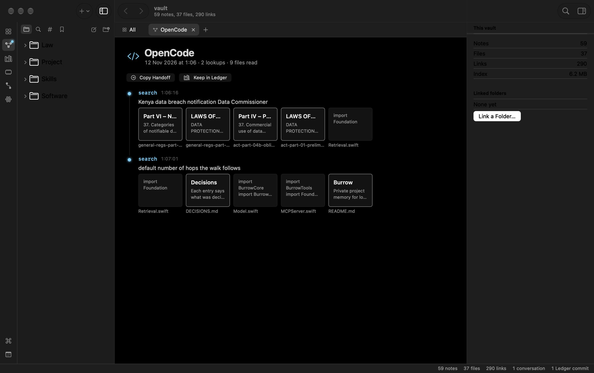

Ask
A question goes to the closest notes and code. The answer names the file and line it came from.

The free Mac app that gives your local and cloud models one shared memory.
6 rules in force
Handed to every program that connects, on main0 files changed
The linked code matches its last git commit0 lines flagged
Nothing in the vault is written to steer an AIA live demo you can click. The questions, answers, files and decisions are the app's own; the terminal is an illustration of Claude Code using Burrow's tools.
Burrow keeps your notes, documents and code in a folder on your Mac, as files you can open without it. Nothing you keep leaves the Mac.
Local or cloud, Claude Code, OpenCode, OpenClaw, Hermes Agent or n8n. Switch whenever you like and keep everything.
What you settle with one model, and why, is handed to the next. Approving, sharing and overriding stay yours alone.

Free for Mac.
Download now
A model on your Mac answers from your notes, documents and code, and cites the file and line. Gemma 4 12B answered 9 of 120 questions about private material alone, and 102 with Burrow.
A question goes to the closest notes and code. The answer names the file and line it came from.

Every decision made with an AI, with its reason and what was turned down. Every program that connects is handed it.

Which AI tools reach your vault and what each read today. One command connects another.

Your notes and code as one graph, the way your models see it. An Obsidian vault works as it is.
A model can read a decision and still break it. Burrow checks each change against the decisions it touches, and holds one that breaks.
In every program. Inside Claude Code, OpenCode, OpenClaw, Hermes Agent, and git's pre-commit hook.
Steering flagged. Text written to steer an AI is shown to you, never handed over as a rule.
Never deletes. A decision is replaced or marked wrong by a later one. The history stays.

A different model in a different program picks up where the last one stopped. Here Gemma 4 12B in OpenCode looks things up in Burrow, and every file it read is listed.

Works with Claude Code, OpenCode, OpenClaw, Hermes Agent, n8n, Ollama, llama.cpp and LM Studio.
On one MacBook Pro, November 2026. The method and every limit.
between Gemma 4 12B and a cloud model, on material neither had seen.
Later Claude Code sessions kept an earlier decision once its reason was kept.
A different program picked the work up at the right step.
A small local model still broke a decision it had read in 2 of 4 runs, which is why Burrow checks changes too.